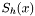
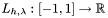
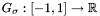

|
|
|
#include <nfft3.h>
Data Fields | |
| int | N_total |
| Total number of Fourier \ coefficients. | |
| int | M_total |
| Total number of samples. | |
| double complex * | f_hat |
| Vector of Fourier coefficients, \ size is N_total float_types. | |
| double complex * | f |
| Vector of samples, \ size is M_total float types. | |
| int | d |
| Dimension, rank. | |
| int * | N |
| Multi bandwidth. | |
| double * | sigma |
| Oversampling-factor. | |
| int * | n |
| FFTW length, equal to sigma*N, default is the power of 2 such that . | |
| int | n_total |
| Total size of FFTW. | |
| int | m |
| Cut-off parameter of the window function, default value is 6 (KAISER_BESSEL), 9 (SINC_POWER), 11 (B_SPLINE), 12 (GAUSSIAN). | |
| double * | b |
| Shape parameter of the window function. | |
| int | K |
| Number of equispaced samples of the window function for PRE_LIN_PSI. | |
| unsigned | nfft_flags |
| Flags for precomputation, (de)allocation, and FFTW usage, default setting is PRE_PHI_HUT| PRE_PSI| MALLOC_X| MALLOC_F_HAT| MALLOC_F| FFTW_INIT| FFT_OUT_OF_PLACE. | |
| unsigned | fftw_flags |
| Flags for the FFTW, default is FFTW_ESTIMATE| FFTW_DESTROY_INPUT. | |
| double * | x |
| Nodes in time/spatial domain, size is  doubles. | |
| double | MEASURE_TIME_t [3] |
| Measured time for each step if MEASURE_TIME is set. | |
| fftw_plan | my_fftw_plan1 |
| Forward FFTW plan. | |
| fftw_plan | my_fftw_plan2 |
| Backward FFTW plan. | |
| double ** | c_phi_inv |
| Precomputed data for the diagonal matrix , size is doubles. | |
| double * | psi |
| Precomputed data for the sparse matrix , size depends on precomputation scheme. | |
| int * | psi_index_g |
| Indices in source/target vector for PRE_FULL_PSI. | |
| int * | psi_index_f |
| Indices in source/target vector for PRE_FULL_PSI. | |
| double complex * | g |
| Oversampled vector of samples, size is n_total double complex. | |
| double complex * | g_hat |
| Zero-padded vector of Fourier coefficients, size is n_total double complex. | |
| double complex * | g1 |
| Input of fftw. | |
| double complex * | g2 |
| Output of fftw. | |
| double * | spline_coeffs |
| Input for de Boor algorithm if B_SPLINE or SINC_POWER is defined. | |
Definition at line 234 of file nfft3.h.